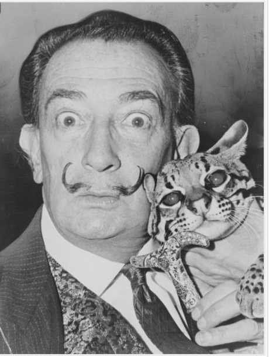

Salvador Dali
A man with a mustache who occasionally painted fantastic paintings
Museum in Florida
More Info
150+ of his paintings
Crazy Story!

Picture of him is on the right, some clip art in the top right corner, wow isnt this amazing!
Conspiracy theory, he was a plant by wax manufactures to start
Who is your favorite artist?:
What is your favorite painting?:
This guys facial hair deserves a museum!
This guy needs to shave!
Surealism?